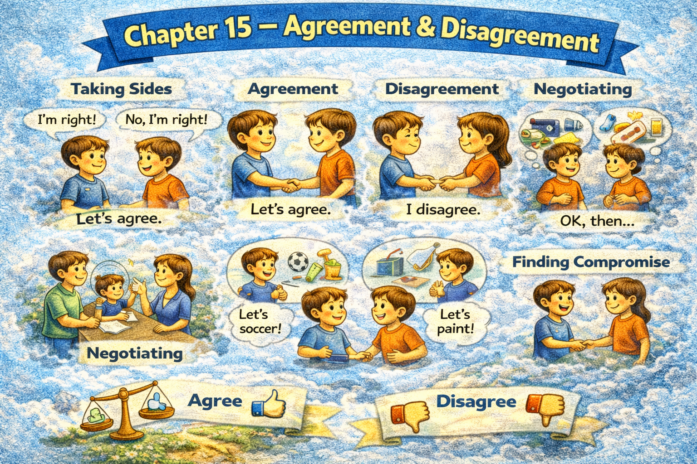

Chapter 15 — Agreement & Disagreement

Micro Scene 1 — Full Agreement
1️⃣ Scene Text
When I fully agree with a statement, I express alignment clearly.
The reasoning appears consistent and well supported.
I see no contradiction in the argument.
The evidence justifies the conclusion convincingly.
If the logic holds under scrutiny, I endorse it.
Agreement reflects shared interpretation.
I confirm that the premise and conclusion align.
When clarity and coherence are present, agreement feels natural.
Strong arguments reduce resistance.
Consensus forms around stable reasoning.
Agreement strengthens collective direction.
2️⃣ Core Verb Pool
agree
express
appear
justify
hold
endorse
reflect
confirm
align
reduce
form
strengthen
3️⃣ Structure Patterns
When X + verb, Y + verb
I see no + noun
If X + verb, Y + verb
X reflects + noun
When X and Y are present, Z + verb
X strengthens + noun
4️⃣ Replace & Extend
Replace alignment:
I fully agree.
→ I completely endorse this view.
→ I share the same conclusion.
Replace justification:
The evidence justifies the claim.
→ The reasoning supports the conclusion.
→ The data validates the argument.
Replace consensus:
Consensus forms around logic.
→ Agreement emerges from clarity.
→ Alignment develops through evidence.
5️⃣ Spoken Mode
I agree completely.
The reasoning makes sense to me.
I don’t see any contradiction.
The evidence supports the conclusion.
That argument holds up.
🔎 Structural Notes
• “hold under scrutiny” implies stress-testing logic.
• Agreement is framed as evaluation, not emotion.
• “endorse” is stronger than “agree”.
Micro Scene 2 — Partial Agreement
1️⃣ Scene Text
I agree with the general direction of the argument, but not with every detail.
Some points are convincing, while others require clarification.
Although the conclusion appears reasonable, the supporting evidence feels incomplete.
I share the core assumption, yet I question its application.
Partial agreement allows nuance without total alignment.
If certain premises are adjusted, the conclusion becomes stronger.
Agreement does not require unconditional acceptance.
I differentiate between the main thesis and secondary claims.
Where the reasoning is solid, I support it.
Where uncertainty remains, I reserve judgment.
Balanced evaluation includes selective agreement.
2️⃣ Core Verb Pool
agree
require
appear
share
question
allow
adjust
become
require
differentiate
support
remain
reserve
3️⃣ Structure Patterns
I agree with X, but + clause
Some…, while others…
Although X + verb, Y + verb
I share X, yet I + verb
If X + verb, Y + verb
Where X + verb, Y + verb
4️⃣ Replace & Extend
Replace selective support:
I support the main idea, but not the conclusion.
→ I accept the premise, but not the implication.
→ I agree with the principle, but not the method.
Replace reservation:
I reserve judgment.
→ I remain cautious.
→ I withhold full endorsement.
Replace nuance:
Partial agreement allows nuance.
→ Selective agreement preserves complexity.
→ Conditional support maintains balance.
5️⃣ Spoken Mode
I agree with the main idea, but not every detail.
Some parts make sense; others need clarification.
I support the direction, though I’m cautious about the conclusion.
I’m not rejecting it — just refining it.
🔎 Structural Notes
• “yet” adds softer contrast than “but”.
• “Where…” introduces selective endorsement.
• Partial agreement protects nuance.
Micro Scene 3 — Respectful Disagreement
1️⃣ Scene Text
I understand the reasoning behind your position, but I reach a different conclusion.
While your argument is coherent, I interpret the evidence differently.
I do not reject your perspective outright; I question its implications.
If certain assumptions are reconsidered, the outcome may shift.
Disagreement does not imply hostility.
It reflects divergence in interpretation.
I acknowledge the strength of your logic, yet I remain unconvinced.
When perspectives differ, clarity becomes more important than volume.
Constructive disagreement strengthens collective reasoning.
Respect maintains dialogue even under tension.
Disagreement, when structured, refines understanding.
2️⃣ Core Verb Pool
understand
reach
interpret
reject
question
reconsider
shift
imply
reflect
acknowledge
remain
differ
strengthen
maintain
refine
3️⃣ Structure Patterns
I understand X, but Y
While X + verb, Y + verb
I do not + verb outright; I + verb
If X + verb, Y may + verb
X does not imply Y
When X + verb, Y + verb
4️⃣ Replace & Extend
Replace divergence:
I interpret the evidence differently.
→ I prioritize different factors.
→ I weigh the risks differently.
Replace tone:
Disagreement does not imply hostility.
→ Criticism does not imply rejection.
→ Questioning does not imply opposition.
Replace refinement:
Constructive disagreement improves clarity.
→ Open debate sharpens reasoning.
→ Divergence deepens understanding.
5️⃣ Spoken Mode
I see your point, but I don’t reach the same conclusion.
Your logic makes sense, though I interpret the data differently.
I’m not rejecting your idea — I’m questioning part of it.
We can disagree without conflict.
🔎 Structural Notes
• “I understand…, but…” softens contrast.
• “outright” signals total rejection avoidance.
• Respectful disagreement separates idea from person.
Micro Scene 4 — Challenging an Argument
1️⃣ Scene Text
I challenge the argument by examining its underlying logic.
If the premise is weak, the conclusion becomes unstable.
The claim appears persuasive at first glance, but it lacks sufficient evidence.
I question whether the reasoning follows consistently from the data.
A strong assertion requires proportional support.
If alternative explanations exist, the certainty decreases.
Challenging an argument does not attack the person presenting it.
It evaluates the structure rather than the source.
Logical gaps weaken credibility.
When inconsistencies emerge, revision becomes necessary.
Critical analysis protects intellectual rigor.
2️⃣ Core Verb Pool
challenge
examine
become
appear
lack
question
follow
require
exist
decrease
attack
evaluate
weaken
emerge
protect
3️⃣ Structure Patterns
I challenge X by + verb-ing
If X + verb, Y + verb
X appears + adjective, but + clause
I question whether + clause
X requires + noun
When X + verb, Y + verb
X does not + verb; it + verb
4️⃣ Replace & Extend
Replace the weakness:
The premise is weak.
→ The evidence is insufficient.
→ The data is incomplete.
Replace the alternative:
If alternative explanations exist…
→ If confounding variables exist…
→ If counterexamples appear…
Replace the evaluation:
I evaluate the structure.
→ I analyze the logic.
→ I test the reasoning.
5️⃣ Spoken Mode
I’m questioning the logic, not the person.
If the premise doesn’t hold, the conclusion falls apart.
It sounds convincing, but I don’t see enough evidence.
If other explanations are possible, certainty drops.
I’m testing the structure of the argument.
🔎 Structural Notes
• “at first glance” signals surface-level impression.
• “proportional support” links claim strength to evidence.
• Structure is separated from identity.
Micro Scene 5 — Managing Conflict
1️⃣ Scene Text
Conflict intensifies when positions become personal.
I try to separate ideas from identity.
If emotions dominate the exchange, clarity declines.
Raising volume does not strengthen reasoning.
When tension rises, I slow the pace of discussion.
Acknowledging shared goals reduces opposition.
If we focus on common ground, resolution becomes more achievable.
Defensiveness blocks understanding.
Calm articulation restores balance.
Conflict is not inherently destructive; unmanaged conflict is.
Structured dialogue transforms disagreement into progress.
2️⃣ Core Verb Pool
intensify
separate
dominate
decline
strengthen
rise
acknowledge
reduce
focus
become
block
restore
transform
3️⃣ Structure Patterns
X intensifies when + clause
If X + verb, Y + verb
X does not + verb
When X + verb, Y + verb
If we + verb, Y + verb
X is not A; it is B
X transforms A into B
4️⃣ Replace & Extend
Replace escalation:
Conflict intensifies when positions become personal.
→ Tension increases when ego dominates.
→ Debate escalates when identity is threatened.
Replace shared ground:
We focus on common goals.
→ We identify shared interests.
→ We clarify mutual priorities.
Replace transformation:
Dialogue transforms disagreement into clarity.
→ Discussion transforms tension into understanding.
→ Structure transforms conflict into learning.
5️⃣ Spoken Mode
Things get worse when it becomes personal.
If emotions take over, clarity drops.
We need to focus on what we both want.
Conflict isn’t bad — unmanaged conflict is.
Calm discussion moves things forward.
🔎 Structural Notes
• “not inherently…, unmanaged…” reframes negativity.
• “separate ideas from identity” is a key negotiation principle.
• Conflict is treated as process, not moral failure.
Micro Scene 6 — Reaching Mutual Understanding
1️⃣ Scene Text
Mutual understanding emerges through active listening.
I restate your position to confirm that I have understood it correctly.
If my interpretation differs from your intention, I adjust it.
Shared clarity requires reciprocal effort.
Agreement is not always necessary for understanding.
When both sides articulate their reasoning clearly, tension decreases.
I acknowledge the legitimacy of your perspective, even if I do not adopt it.
Common ground often appears after careful clarification.
If misunderstanding is resolved, disagreement becomes manageable.
Understanding precedes resolution.
Dialogue, when structured, builds trust.
2️⃣ Core Verb Pool
emerge
restate
confirm
differ
adjust
require
articulate
decrease
acknowledge
adopt
appear
resolve
build
3️⃣ Structure Patterns
X emerges through + noun
I + verb to confirm + clause
If X + verb, Y + verb
X is not always necessary for Y
When X + verb, Y + verb
X precedes + noun
X builds + noun
4️⃣ Replace & Extend
Replace clarification:
I restate your position.
→ I summarize your point.
→ I reflect back your argument.
Replace legitimacy:
I acknowledge your perspective.
→ I recognize the validity of your view.
→ I respect your reasoning.
Replace resolution:
Understanding precedes resolution.
→ Clarity precedes compromise.
→ Dialogue precedes agreement.
5️⃣ Spoken Mode
Let me make sure I understand you correctly.
If I misunderstood, I’ll adjust.
We don’t have to agree to understand each other.
Once we’re clear, the disagreement feels smaller.
Good dialogue builds trust.
🔎 Structural Notes
• “precede” signals sequence in conflict resolution.
• “acknowledge without adopt” separates respect from agreement.
• Mutual understanding ≠ identical conclusions.
🔸 Integration Scene — Agreement & Disagreement Structure
Agreement arises from aligned reasoning.
Partial agreement preserves nuance.
Disagreement reflects divergence in interpretation.
Challenging arguments strengthens logic.
Conflict intensifies when identity replaces analysis.
Shared goals reduce tension.
Active listening restores balance.
Understanding precedes resolution.
Respect sustains dialogue.
Strong reasoning withstands scrutiny.
Weak arguments collapse under examination.
Consensus requires clarity.
Disagreement refines thought.
Dialogue builds trust.
Structure protects relationships.
Agreement and disagreement are tools, not threats.
Integration Verb Focus
agree
endorse
question
challenge
acknowledge
separate
resolve
refine